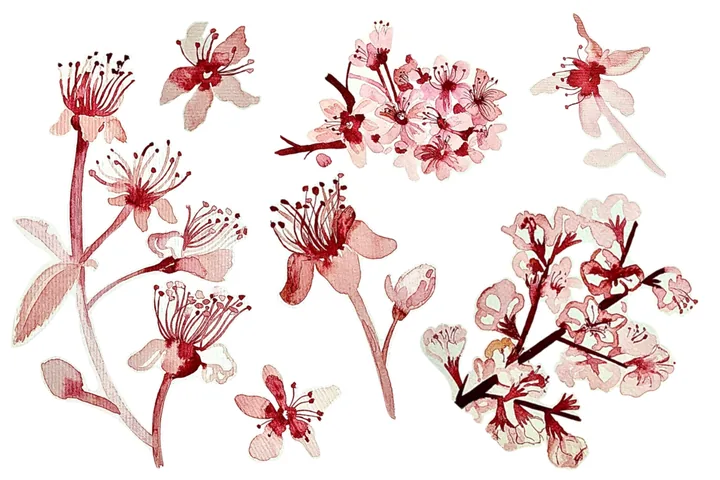

Diario

Come fiori selvatici
Selvatico è ciò che cresce senza chiedere permesso. Per me la natura è il luogo del riparo e della bussola: quando mi perdo, torno ad osservare i ritmi lenti della terra.
E disegno per ritrovare frammenti di quel mondo rigenerante, estratti di piante e vita animale che segnano la strada per ritrovare sé stessi.